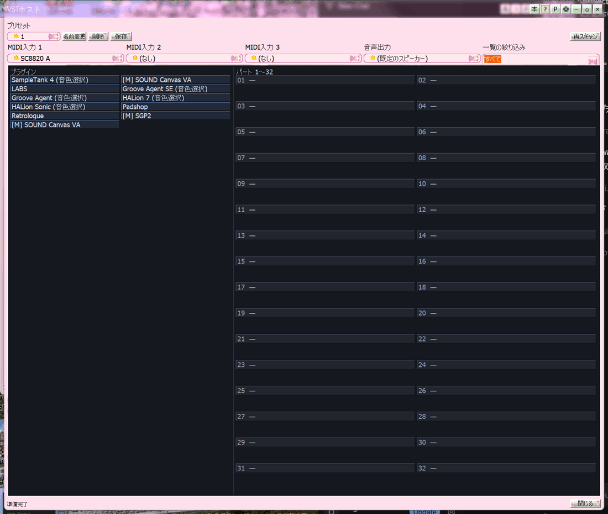

Playing instruments with the VST host
The VST host loads your VST instruments so you can play them live from a MIDI keyboard. Open it with the media player's bottom-bar VST button. To play playlist .mid files through a VST, see Playing .mid through a VST instead.

VST host with plugins and part assignment
From zero to sound
- Press VST on the bottom bar. Plug-ins are on the left; Parts 1–32 on the right.
- If the list is empty, use Rescan (or right-click → Rescan plug-ins). Only plug-ins that can land on a part and sound — or that need a patch picked in their own window — are listed. On first open and rescan, each plug-in that passes the drop and sound check is added to the left list as soon as it is confirmed. Copies of the same name are kept only if they can drop; the first droppable one wins. The GS/XG shared-DLL paths from settings are searched too. After the name, <x86> <x64> is bitness, <patch> means pick a sound in the plug-in editor, and [M16ch] is a 16-channel multi. Effects that cannot drop are omitted (LoopMash FX and similar FX are not instruments, so they stay off the list). Items that will not drop are not shown even briefly during the check. HALion, HALion Sonic, Kontakt, Groove Agent and similar samplers are listed as <patch> instantly without opening. The wait popup sits in the parts pane on the right.
- Drag a plug-in onto one of Parts 1–32. While it loads, “Initializing VST. Please wait…” is shown. Patch-browser instruments also skip loading library program 0 on drop, so the drag is faster.
- Choose MIDI In 1–3 for keyboards. Each device appears twice: 1-16ch (parts 1–16) and 17-32ch (parts 17–32). Put one keyboard on 1-16ch and another on 17-32ch to split channels; the third input uses the same bands. Assigning the same device to several ports reaches 32 parts like Super-MPU. The Main play combo to their right is Main-playback thru: whatever the player is sounding (any format) is routed here, and it can run together with MIDI In 1–3. While thru is on, the player's own speakers are silent and you hear only this host's audio output. If it is MIDI, the SMF also merges with the keyboards.
- Play the keyboard — that part should sound. Names marked <patch> stay silent until you open the plug-in editor from the slot button and pick a sound.
Main controls
- Preset
- Save / switch / rename / delete wiring and device choices.
- Rescan
- Rebuild the plug-in list. Only instruments that can drop onto a part remain. Each plug-in that passes the drop and sound check is added on the left as it is confirmed. Names are tagged <x86> <x64>, <patch>, and [M16ch]. Samplers such as HALion, HALion Sonic, Kontakt and Groove Agent are listed as <patch> instantly, without opening. Plug-ins that already sound finish the check as soon as audio is heard. The wait popup sits in the parts pane on the right.
- Save / Rename / Delete
- Preset management.
- MIDI In 1–3
- Hardware keyboards. Each device is listed as 1-16ch (parts 1–16) and 17-32ch (parts 17–32). Up to three can be open at once.
- Main play
- Main-playback thru routes the player's audio into this host. Can be used together with MIDI In 1–3.
- Filter
- Narrow the list by name. Tags such as <x64> also match.
- Volume
- Master level for this host. It scales the whole mix (keyboards, VSTs, and main-playback thru) and the same gain is written to WAV out.
- WAV out
- Writes this host's mix as a WAV file. With main-playback thru on, the player's sound is included. Press again to finish the file. Very long recordings are fine.
MIDI In 1-16ch / 17-32ch
MIDI In 1, 2, and 3 list each device as name 1-16ch and name 17-32ch. 1-16ch feeds Parts 1–16; 17-32ch feeds Parts 17–32. Use that to split keyboards by bank, or assign the same device to several inputs so one keyboard reaches 32 parts (Super-MPU style). Super-MPU devices whose name contains MPU also forward 1-16ch to 17–32 automatically, and honour F5 cable-select. The wiring canvas right-click menu has the same MIDI In 1 / 2 / 3 submenus.
Main play is not hardware: it is Main-playback thru. Whatever the media player is sounding (mp3, KPI, video audio, and so on) arrives and mixes with this host's VSTs. When the file is MIDI, that SMF also merges with MIDI In 1–3. WAV out records that mix. While thru is on, the player's own speakers are silent; sound comes only from this host's audio output. Thru can run together with the three MIDI inputs.
Slot actions
- Slot button — open the plug-in's editor window.
- ▼ — choose send channel or program / kit.
- Right-click — Open editor, MIDI channel to send (as received / ch1–16), program/kit, MIDI In 1 / 2 / 3, main-playback thru, Open MIDI monitor, clear slot, rescan, save preset.
Computer keyboard
Without a MIDI device you can still play: lower keys ≈ C4, upper ≈ C5. Space sends all notes off. Disabled while a text field has focus.
Modules that play many instruments
SOUND Canvas VA, SGP2, and similar modules take 16 channels in one slot. Each channel can be a different instrument.
64-bit plug-ins
64-bit plug-ins load through KpiHost64 — same idea as Expanding formats with KPI plug-ins.
Please note
“This plug-in has no editor window” means the UI cannot open — sound still works.